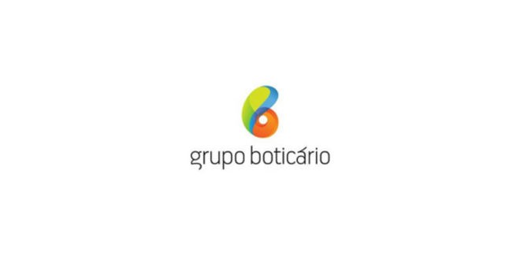
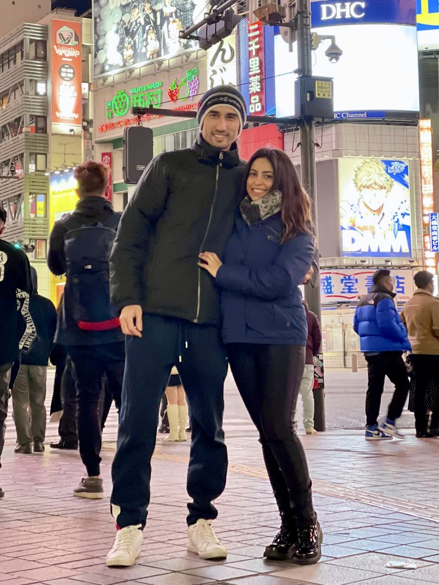
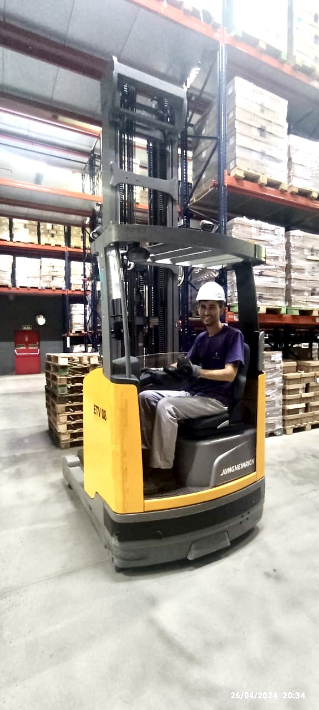

Minha Trajetória

2011
Comecei minha jornada no Grupo Boticário como auxiliar, entrando no setor logístico.

2017
Tive a oportunidade de morar e trabalhar no Japão, onde ampliei minha visão de mundo e ganhei experiência internacional.

2023
Voltei ao Brasil e retornei ao Grupo Boticário, recomeçando do zero e chegando novamente à função de conferente.

2024
Iniciei minha transição de carreira para tecnologia. Comecei a estudar HTML, CSS, JavaScript e versionamento com Git.